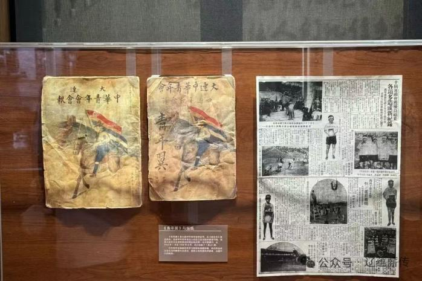

大连东关街，位于西岗区日新街道，东起英华街，西至市场街，南抵黄河路，北达长江路大桥洞，面积约0.45平方公里。街区始建于1905年日占时期，原为沙俄划定的“中国区”，后因日本殖民者设立东部关卡而得名，民间称其为“小岗子”。现存建筑多为20世纪20年代建造的日式仿欧风格联排住宅，以雕花拱窗、花岗岩门楣为特色，保留棋盘式布局。
东关街曾为大连民族工商业发源地，20世纪二三十年代以大龙街、新开路为核心，聚集2000余家商铺，涵盖杂货、油坊、餐饮等行业，孕育顺兴铁工厂、华春照相馆等企业，并设有中共地下联络点。2015年启动旧城改造，2017年起系统推进保护开发，2024年完成前期修缮并引入商业、文旅业态，日均客流量超2.2万人次。现存区域融合历史风貌与现代功能，设有“老酒馆”沉浸式剧场等文化地点。
东关街历史文化街区以其独特的建筑风格吸引着游客，这里融合了俄式、日式和中国传统元素，共有13处不可移动文物建筑、37处历史建筑、109处传统风貌建筑。漫步其中，可以欣赏到修旧如旧的历史建筑，如康德记西栈、华春照相馆、四云楼等，感受百年建筑的魅力。
同时，东关街提供艺文生活体验，市民可以观看非遗市集、特色演出、云上音乐节等活动，还能与非遗市集的艺术家交流，体验亲手制作的乐趣。
 ← 返回大连地图